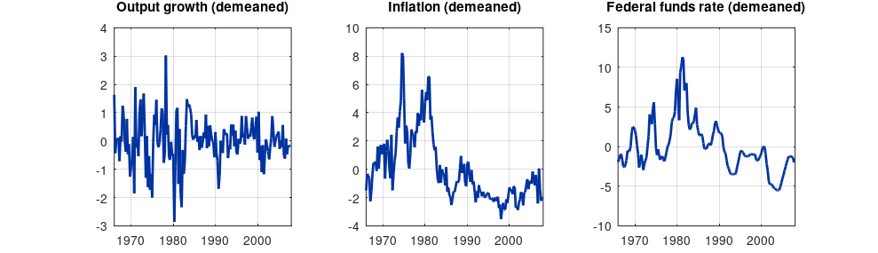
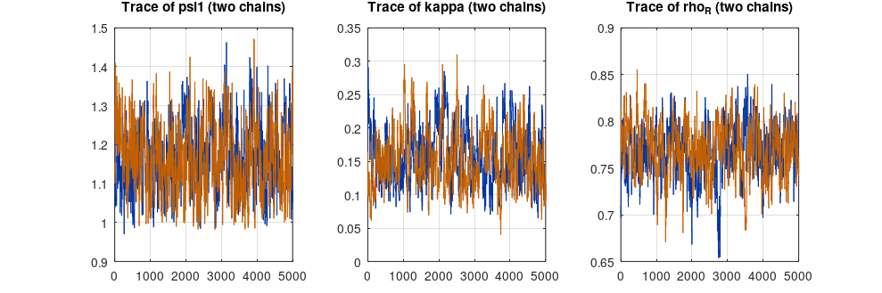
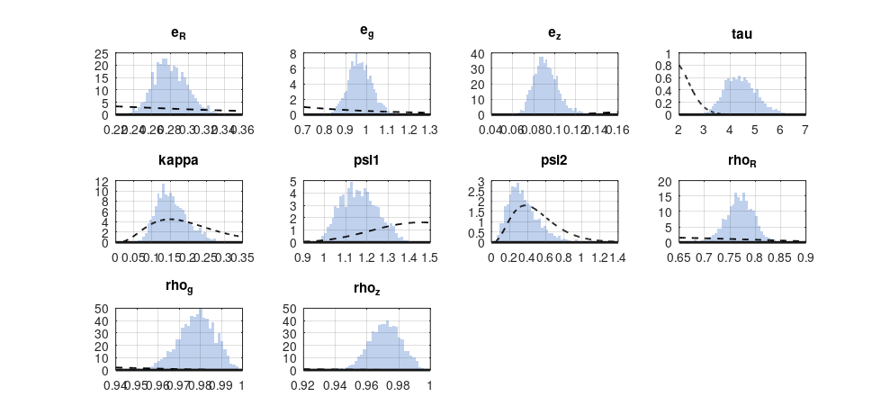
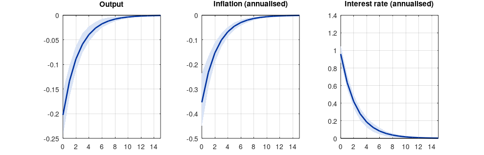
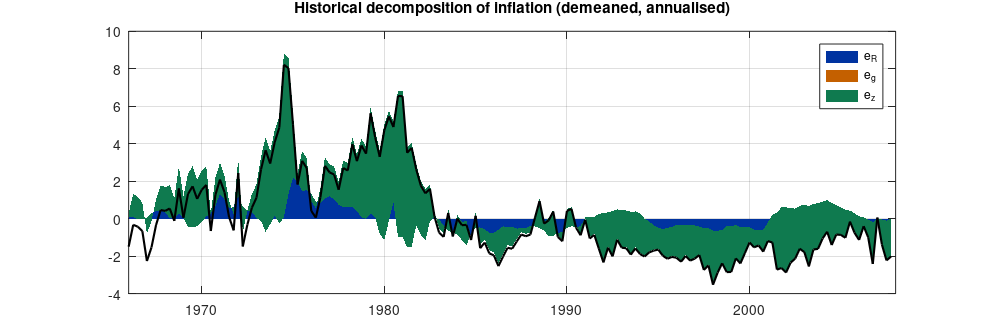

Step 1The question and the model
How strongly did the Federal Reserve respond to inflation, and which shocks drove U.S. inflation? Calibration cannot answer this: it requires estimating the policy rule jointly with the rest of the economy. Bayesian estimation (Smets and Wouters 2003; An and Schorfheide 2007) combines the model's likelihood, computed with the Kalman filter, with prior information about the parameters.
The model is the New Keynesian model of An and Schorfheide (2007), with a technology growth shock \(z_t\), a demand (government spending) shock \(g_t\) and a monetary policy shock \(\varepsilon^R_t\):
and measurement equations that link the model to the data:
Data and measurement are part of the model
- Three observables and three shocks. A linear DSGE model with fewer shocks than observables is stochastically singular: it implies an exact linear relation among the observables that the data reject. Never use more observables than shocks (or add measurement errors).
- Demeaned data. Each observable has its sample mean removed, so the model is estimated in deviations and the constants (trend growth, the inflation target, the real rate) are not estimated. Estimating them requires that the model's steady state matches the data's means, which with these data would force a real interest rate near zero. Demeaning is a common, transparent choice; state it in the paper.
- Units. Output growth is in percent per quarter; inflation and the interest rate are annualised percentages, hence the factor 4.
How to write it: data
We estimate the model on three quarterly U.S. series for 1966Q1–2007Q4: the growth rate of real GDP, inflation measured by the GDP deflator (annualised), and the effective federal funds rate. The sample ends before the zero-lower-bound period. All series are demeaned prior to estimation.
Step 2Look at the data
d = csvread('us_small_demeaned.csv', 1, 0);
t = 1966:0.25:2007.75;
f = figure('position', [0 0 900 260]);
tt = {'Output growth (demeaned)', 'Inflation (demeaned)', 'Federal funds rate (demeaned)'};
for j = 1:3, subplot(1, 3, j); plot(t, d(:, j)); title(tt{j}); grid on; xlim([1966 2008]); end
print(f, '-dpng', '-r110', 'data.png');
fprintf('%d quarters; standard deviations: output growth %.2f, inflation %.2f, interest rate %.2f\n', size(d, 1), std(d));168 quarters; standard deviations: output growth 0.81, inflation 2.36, interest rate 3.26

Step 3Priors and the model file
| Parameter | Meaning | Prior | Mean | Std. dev. |
|---|---|---|---|---|
| \(\tau\) | inverse intertemporal elasticity | Gamma | 2.0 | 0.5 |
| \(\kappa\) | slope of the Phillips curve | Gamma | 0.2 | 0.1 |
| \(\psi_1\) | response to inflation | Gamma | 1.5 | 0.25 |
| \(\psi_2\) | response to the output gap | Gamma | 0.5 | 0.25 |
| \(\rho_R, \rho_g, \rho_z\) | persistence | Beta | 0.5, 0.8, 0.66 | 0.2, 0.1, 0.15 |
| \(\sigma_R, \sigma_g, \sigma_z\) | shock standard deviations | Inverse gamma | 0.4, 1.0, 0.5 | 4 (degrees of freedom) |
The priors follow An and Schorfheide (2007): their means are standard values from earlier studies, and their spreads allow the data to move the estimates substantially. Gamma priors keep parameters positive, Beta priors keep persistence between 0 and 1.
// An-Schorfheide (2007) New Keynesian model, estimated on demeaned U.S. data.
var y pi R g z YGR INFL INT;
varexo e_R e_g e_z;
parameters tau kappa psi1 psi2 rho_R rho_g rho_z r_A;
tau = 2; kappa = 0.2; psi1 = 1.5; psi2 = 0.5; rho_R = 0.5; rho_g = 0.8; rho_z = 0.66;
r_A = 2; // annual real rate, fixes beta (not estimated)
model(linear);
# beta = 1 / (1 + r_A/400);
y = y(+1) - (1/tau) * (R - pi(+1) - z(+1)) + g - g(+1);
pi = beta * pi(+1) + kappa * (y - g);
R = rho_R * R(-1) + (1 - rho_R) * (psi1*pi + psi2*(y - g)) + e_R;
g = rho_g * g(-1) + e_g;
z = rho_z * z(-1) + e_z;
YGR = y - y(-1) + z; // measurement equations
INFL = 4 * pi;
INT = 4 * R;
end;
shocks;
var e_R; stderr 0.4; var e_g; stderr 1; var e_z; stderr 0.5;
end;
steady;
check;
estimated_params;
tau, gamma_pdf, 2.00, 0.50;
kappa, gamma_pdf, 0.20, 0.10;
psi1, gamma_pdf, 1.50, 0.25;
psi2, gamma_pdf, 0.50, 0.25;
rho_R, beta_pdf, 0.50, 0.20;
rho_g, beta_pdf, 0.80, 0.10;
rho_z, beta_pdf, 0.66, 0.15;
stderr e_R, inv_gamma_pdf, 0.4, 4;
stderr e_g, inv_gamma_pdf, 1.0, 4;
stderr e_z, inv_gamma_pdf, 0.5, 4;
end;
varobs YGR INFL INT;
estimation(datafile = 'us_small_demeaned.csv', mode_compute = 5, mh_replic = 10000, mh_nblocks = 2,
mh_jscale = 0.6, mh_drop = 0.5, bayesian_irf, irf = 16, nograph) y pi R;
shock_decomposition(nograph) INFL;dynare as
ESTIMATION RESULTS
Log data density (Modified Harmonic Mean) is -768.017715.
parameters
prior mean post. mean 90% HPD interval prior pstdev
tau 2.000 4.4320 3.4072 5.4476 gamm 0.5000
kappa 0.200 0.1549 0.0876 0.2252 gamm 0.1000
psi1 1.500 1.1645 1.0191 1.2993 gamm 0.2500
psi2 0.500 0.3580 0.0921 0.6109 gamm 0.2500
rho_R 0.500 0.7687 0.7251 0.8151 beta 0.2000
rho_g 0.800 0.9780 0.9644 0.9925 beta 0.1000
rho_z 0.660 0.9713 0.9553 0.9882 beta 0.1500
standard deviation of shocks
prior mean post. mean 90% HPD interval prior pstdev
e_R 0.400 0.2803 0.2476 0.3081 invg 4.0000
e_g 1.000 0.9685 0.8751 1.0643 invg 4.0000
e_z 0.500 0.0919 0.0728 0.1097 invg 4.0000
gaminv at line 101 column 7
prior_bounds at line 57 column 26
dynare_estimation_init at line 193 column 16
evaluate_smoother at line 66 column 76
shock_decomposition at line 87 column 74
driver at line 430 column 5
dynare at line 318 column 5
gaminv at line 101 column 7
prior_bounds at line 57 column 26
…How to read it
estimated_paramslists each estimated parameter with its prior: distribution, mean, standard deviation.varobsnames the observables; their names must match the column headers of the data file.estimationfirst finds the posterior mode (mode_compute = 5, Dynare's Newton-type optimiser), then runs two independent Metropolis–Hastings chains of 10,000 draws each, discards the first half of each chain as burn-in (mh_drop), and reports posterior means and 90% highest-posterior-density intervals.mh_jscalescales the proposal distribution; it is tuned so that about a quarter to a third of proposals are accepted.- Chains for a paper should be much longer (at least 2 × 100,000); this page uses short chains so that it can be rebuilt in minutes.
The output reports, for each parameter: the prior mean, the posterior mean, the 90% HPD interval, the prior distribution and the prior standard deviation.
Step 4Did the sampler converge?
fn = M_.fname;
files = dir(fullfile(fn, 'metropolis', [fn '_mh*_blck*.mat']));
nb = options_.mh_nblck; draws = cell(1, nb);
for b = 1:nb
x = [];
ff = dir(fullfile(fn, 'metropolis', sprintf('%s_mh*_blck%d.mat', fn, b)));
[~, o] = sort(cellfun(@(s) sscanf(regexprep(s, '.*_mh(\d+)_.*', '$1'), '%d'), {ff.name}));
for k = o, S = load(fullfile(fn, 'metropolis', ff(k).name)); x = [x; S.x2]; end
draws{b} = x(floor(end/2)+1:end, :); % drop the first half as burn-in
end
pn = cellstr(bayestopt_.name);
n = size(draws{1}, 1);
m = cellfun(@(x) mean(x), draws, 'UniformOutput', false); m = vertcat(m{:});
v = cellfun(@(x) var(x), draws, 'UniformOutput', false); v = vertcat(v{:});
rec = load_last_mh_history_file(fullfile(fn, 'metropolis'), fn); acc_ratio = rec.AcceptanceRatio;
W = mean(v); B = n * var(m); Rhat = sqrt(((n-1)/n * W + B/n) ./ W);
fprintf('Acceptance ratios by chain: %s\n', sprintf('%.3f ', acc_ratio));
fprintf('%-8s %8s\n', 'param', 'R-hat');
for j = 1:numel(pn), fprintf('%-8s %8.3f\n', pn{j}, Rhat(j)); end
f = figure('position', [0 0 900 300]);
show = {'psi1', 'kappa', 'rho_R'};
for j = 1:3
k = find(strcmp(pn, show{j}));
subplot(1, 3, j); plot(draws{1}(:, k), 'linewidth', 0.6); hold on; plot(draws{2}(:, k), 'linewidth', 0.6);
title(['Trace of ' show{j} ' (two chains)']); grid on;
end
print(f, '-dpng', '-r110', 'trace.png');Acceptance ratios by chain: 0.321 0.322 param R-hat e_R 1.002 e_g 1.000 e_z 1.003 tau 1.001 kappa 1.004 psi1 1.000 psi2 1.000 rho_R 1.006 rho_g 1.008 rho_z 1.000

How to read it
- Acceptance ratio. Between about 0.2 and 0.4 is the target. Too high means the sampler takes tiny steps and explores slowly; too low means it rarely moves.
- R-hat (Gelman and Rubin 1992) compares the variance between the two chains with the variance within them. Values close to 1 (below about 1.1) indicate that the chains have converged to the same distribution. Dynare reports the related Brooks–Gelman diagnostics graphically.
- Trace plots. The two chains should overlap and move freely around the same region, with no trends.
Step 5Posterior estimates against the priors
f = figure('position', [0 0 900 420]);
alld = [draws{1}; draws{2}];
for j = 1:numel(pn)
subplot(3, 4, j);
[ff, xi] = hist(alld(:, j), 40); bar(xi, ff / trapz(xi, ff), 1, 'facecolor', [0.75 0.82 0.93], 'edgecolor', 'none'); hold on;
[xp, fp] = draw_prior_density(j, bayestopt_);
plot(xp, fp, 'k--', 'linewidth', 1.2); title(pn{j}); grid on;
end
print(f, '-dpng', '-r110', 'posterior.png');
fprintf('%-8s %10s %10s %10s %10s\n', 'param', 'prior mean', 'post. mean', '5%', '95%');
for j = 1:numel(pn)
q = sort(alld(:, j)); fprintf('%-8s %10.3f %10.3f %10.3f %10.3f\n', pn{j}, bayestopt_.p1(j), mean(alld(:, j)), q(round(0.05*end)), q(round(0.95*end)));
endparam prior mean post. mean 5% 95% e_R 0.400 0.280 0.252 0.314 e_g 1.000 0.968 0.876 1.068 e_z 0.500 0.092 0.075 0.113 tau 2.000 4.432 3.459 5.537 kappa 0.200 0.155 0.094 0.234 psi1 1.500 1.164 1.032 1.317 psi2 0.500 0.358 0.126 0.690 rho_R 0.500 0.769 0.720 0.811 rho_g 0.800 0.978 0.963 0.992 rho_z 0.660 0.971 0.954 0.988

How to read it
Bars are the posterior, dashed lines the prior. Where the two differ, the data are informative.
- The policy rule. The response to inflation \(\psi_1\) is estimated just above 1, lower than its prior mean: over 1966–2007, which includes the high-inflation 1970s, the Federal Reserve on average barely satisfied the Taylor principle. Interest-rate smoothing \(\rho_R\) is high.
- The Phillips curve slope \(\kappa\) is estimated at about 0.15: inflation responds weakly to the output gap.
- Shock persistence. The demand and technology shocks are very persistent (\(\rho_g\), \(\rho_z\) near 0.97), a common finding in small models: persistent shocks absorb dynamics the model's frictions cannot generate.
- Where the posterior looks like the prior, the data say little about that parameter. The identification guide shows how to check this before estimating.
Step 6Bayesian impulse responses
f = figure('position', [0 0 900 290]);
vv = {'y', 'pi', 'R'}; tt = {'Output', 'Inflation (annualised)', 'Interest rate (annualised)'}; sc = [1 4 4];
for j = 1:3
r = oo_.PosteriorIRF.dsge;
m = sc(j) * r.Mean.([vv{j} '_e_R']); lo = sc(j) * r.HPDinf.([vv{j} '_e_R']); hi = sc(j) * r.HPDsup.([vv{j} '_e_R']);
subplot(1, 3, j); fill([0:15 15:-1:0], [lo' fliplr(hi')], [0.85 0.89 0.96], 'edgecolor', 'none'); hold on;
plot(0:15, m); plot([0 15], [0 0], 'k-', 'linewidth', 0.5); title(tt{j}); grid on; xlim([0 15]);
end
print(f, '-dpng', '-r110', 'irf.png');
fprintf('Monetary shock, impact (posterior mean): output %.2f%%, inflation %.2f pp, interest rate %.2f pp\n', ...
oo_.PosteriorIRF.dsge.Mean.y_e_R(1), 4*oo_.PosteriorIRF.dsge.Mean.pi_e_R(1), 4*oo_.PosteriorIRF.dsge.Mean.R_e_R(1));Monetary shock, impact (posterior mean): output -0.20%, inflation -0.35 pp, interest rate 0.96 pp

How to read it
Each line is the posterior mean response to a one-standard-deviation monetary policy shock; the shaded band is the 90% HPD interval, which reflects parameter uncertainty. Unlike a VAR, the DSGE model identifies the shock through its structure: every response follows from the estimated equations.
Step 7Which shocks drove inflation?
sd = oo_.shock_decomposition; % variables x (shocks + initial values + smoothed) x time
iv = find(strcmp(cellstr(M_.endo_names), 'INFL'));
contrib = squeeze(sd(iv, 1:3, :))';
f = figure('position', [0 0 900 300]);
area(t, contrib, 'edgecolor', 'none'); hold on; plot(t, squeeze(sd(iv, end, :)), 'k', 'linewidth', 1.4);
legend(cellstr(M_.exo_names), 'location', 'northeast'); title('Historical decomposition of inflation (demeaned, annualised)'); grid on; xlim([1966 2008]);
print(f, '-dpng', '-r110', 'decomp.png');
share = sum(contrib.^2) / sum(sum(contrib.^2));
fprintf('Share of the squared contributions to inflation: %s\n', strjoin(cellfun(@(s, v) sprintf('%s %.0f%%', s, 100*v), cellstr(M_.exo_names)', num2cell(share), 'UniformOutput', false), ', '));Share of the squared contributions to inflation: e_R 6%, e_g 0%, e_z 94%

How to read it
The black line is demeaned inflation; the coloured areas show how much of it each smoothed shock accounts for in each quarter (plus the effect of initial conditions, not shown). In this small model the persistent technology growth shock accounts for almost all of it (94% of the squared contributions), including the Great Inflation of the 1970s and the disinflation of the 1980s; monetary policy shocks account for the rest. The demand shock does not move inflation at all: in this model it shifts output and its natural level together. That is a property of a three-shock model with no cost-push shock: a richer model would split inflation between more shocks, so read the decomposition as model-dependent.
Step 8Write the paper
How to write it: results
Table 2 reports the prior and posterior distributions. The posterior mean of the response of the policy rate to inflation is about 1.2, with a 90 percent interval just above one, indicating that over 1966–2007 the Federal Reserve on average satisfied the Taylor principle only narrowly; interest rates were adjusted gradually (posterior mean of the smoothing coefficient about 0.77). The slope of the Phillips curve is estimated at about 0.15. Two Metropolis–Hastings chains were run; the Gelman–Rubin statistics are close to one for all parameters. A contractionary monetary policy shock lowers output and inflation (Figure 3).
Common mistakes
- More observables than shocks: stochastic singularity.
- Data and model in different units (annualised vs quarterly, percent vs fractions, levels vs growth rates).
- Reporting estimates from chains that have not converged, or from very short chains.
- Running the sampler without first checking the mode (
mode_check) and identification. - Priors so tight that the posterior equals the prior, then presenting the result as an estimate. Always plot priors against posteriors.